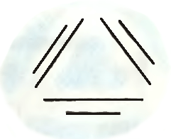
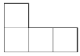
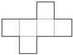
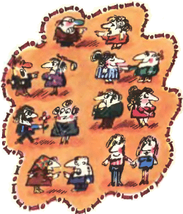
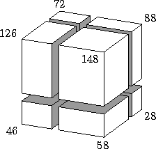

Задача 5.1. На каждой из одиннадцати карточек написано по цифре, не превосходящей пяти. Расположив эти карточки в ряд, Миша получил одно 11-значное число; затем, расположив те же карточки по-другому, Миша получил второе 11-значное число. Докажите, что сумма двух этих чисел будет содержать хотя бы одну четную цифру в своей десятичной записи.
Задача 5.2. Можно ли соединить некоторые концы отрезков, изображённых на рисунке, отрезками так, чтобы получилась одна несамопересекающаяся ломаная?
Задача 5.3. Можно ли из фигурок, нарисованных ниже сложить квадрат, используя фигурки обоих видов? Фигурки можно поворачивать и переворачивать. \begincenter  
Задача 5.4. На математическом конкурсе было предложено несколько простых и несколько сложных задач. Участнику давали 3 очка за решение сложной и 2 очка за решение простой задачи. Кроме того, за каждую нерешенную простую задачу списывалось 1 очко. Рома решил 10 задач и набрал 14 очков. Сколько было простых задач?
Задача 5.5. В числах МИХАЙЛО и ЛОМОНОСОВ каждая буква обозначает цифру (разным буквам соответствуют разные цифры). Известно, что у этих чисел произведения цифр равны. Могут ли оба числа быть нечётными?
Задача 5.6. В некотором царстве каждые двое — либо друзья, либо враги. Каждый человек может в любой момент поссориться со всеми друзьями и помириться со всеми врагами. Оказалось, что каждые три человека могут таким образом стать друзьями. Докажите, что тогда и все люди в государстве могут стать друзьями.
Задача 5.7. Среди 25 жирафов, каждые два из которых различного роста, проводится конкурс "Кто выше?". За один раз на сцену выходят пять жирафов, а жюри справедливо (согласно росту) присуждает им места с первого по пятое. Каким образом надо организовать выходы жирафов, чтобы после семи выходов определить первого, второго и третьего призёров конкурса?
Задача 5.8. Три гангстера украли из сейфа 10 бриллиантов общей стоимостью 4 000 000 долларов. При этом они рассчитывали разделить бриллианты так, чтобы каждому досталось не меньше 1 000 000 долларов. При погоне один из бриллиантов стоимостью 600 000 долларов потерялся, и такой раздел стал невозможен. Мог ли он быть возможен вначале, или гангстеры заведомо ошибались?
Дополнительные задачи
Задача 5.9. Имеются три кучи камней. Сизиф таскает по одному камню из кучи в кучу. За каждое перетаскивание он получает от Зевса количество монет, равное разности числа камней в куче, в которую он кладёт камень, и числа камней в куче, из которой он берёт камень (сам перетаскиваемый камень при этом не учитывается). Если указанная разность отрицательна, то Сизиф возвращает Зевсу соответствующую сумму денег (если Сизиф не может расплатиться, то Зевс великодушно позволяет ему совершить перетаскивание в долг). В некоторый момент оказалось, что все камни лежат в тех же кучах, в которых они лежали первоначально. Каков наибольший суммарный заработок Сизифа на этот момент?
Задача 5.10. В копилке собрано четыре рубля медными советскими монетами (по 1, 3 и 5 копеек). Докажите, что этими монетами можно заплатить три рубля без сдачи.
Задача 5.11. Перед Гарри Поттером в ряд лежат несколько шариков, на которых написаны ненулевые цифры (на каждом шарике одна цифра). За один взмах волшебной палочки он может удалить самый левый шарик, при этом после каждого шарика с цифрой k появятся шарики с цифрами k + 1, k + 2, ..., 9. Например, если перед Гарри лежат шарики 2, 6, 5, 9, после взмаха палочки будут шарики 6, 7, 8, 9, 5, 6, 7, 8, 9, 9. Всегда ли Гарри сможет убрать все шарики?
Задача 5.12. Деревянный брусок тремя распилами распилили на восемь меньших брусков. На рисунке у семи брусков указана их площадь поверхности. Какова площадь поверхности невидимого бруска?